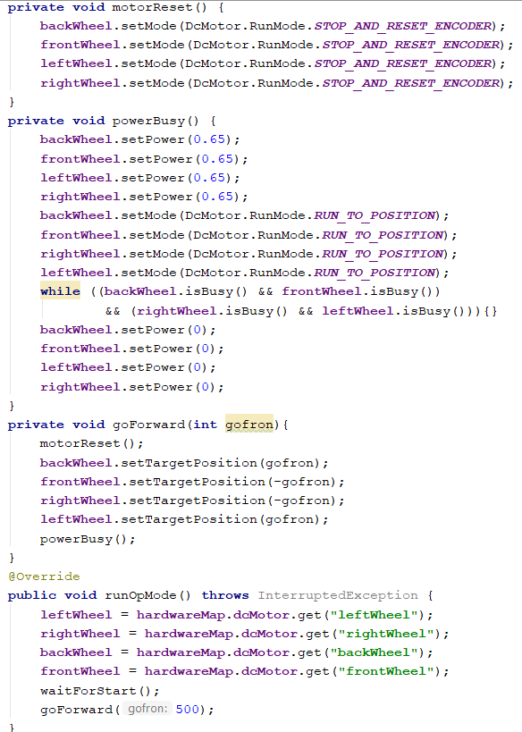

Encoder Based Auto
A step up from a time-based auto is a purely encoder-based auto. Each motor in a basic encoder-based control system would have its own controller. Each controller applied a certain amount of power at a certain rate until the motor's encoder reached a certain set of rotations. Though more accurate than time-based autonomouses, the encoder-based auto isn't infallible.
More Advanced Setup
Building off of the setup from the time-based auto, the encoder-based auto excels with the use of custom methods. More about methods can be found here.
The image on the left shows the setup of a basic encoder-based autonomous. Building on the structure from the time-based autonomous, the compact nature of this kind of encoder-based autonomous is in part due to the FTC SDK's built-in "setTargetPosition" feature.
- The very first method is used to reset the encoder values of the motors back to zero before starting rotations to a new target position.
- The next method is for setting an arbitrary power and changing the mode of the motors to run to a certain position.
- "powerBusy" also tells the robot not to do anything while the motors are stil running, and then to finally stop the robot once the movements are completed.
- Next to last, the "goForward" method tells the robot to go forward a certain amount of ticks, the orientation of the motors accounted for with a negative sign on the motors that are backwards in orientation to an arbitrary "front" of the robot.
- As an example, the robot is told to go forward a certain amount of encoder ticks.